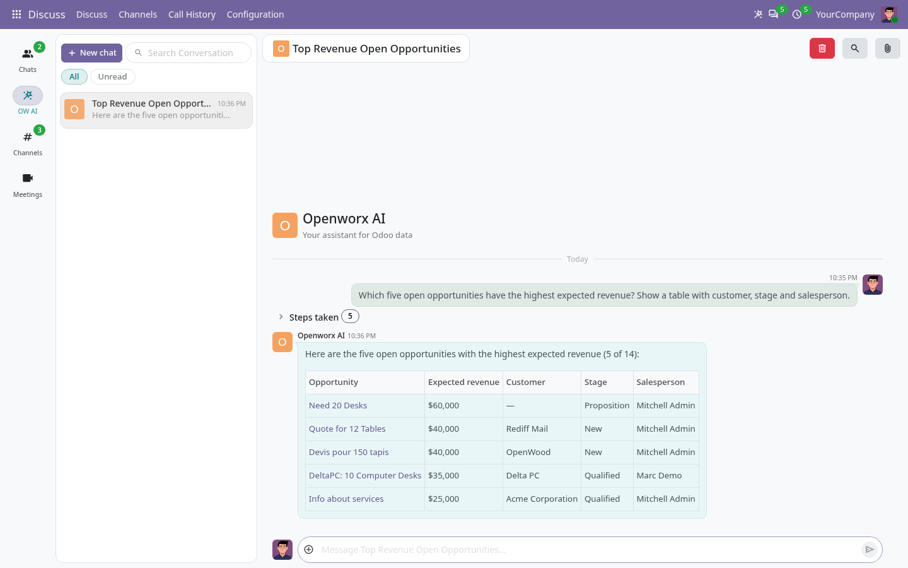
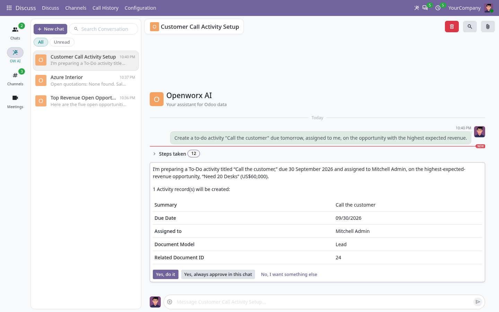
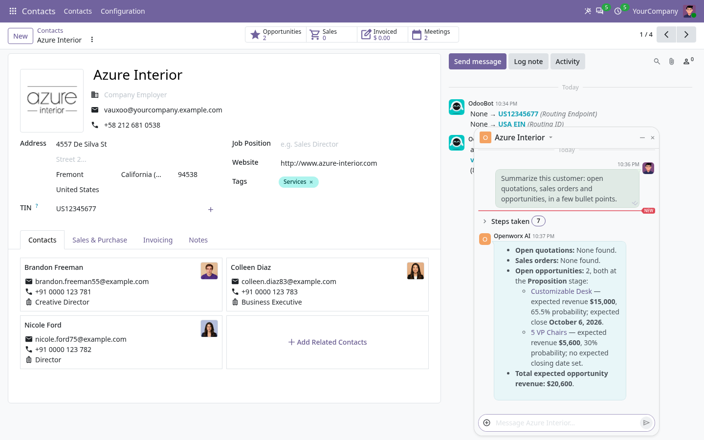
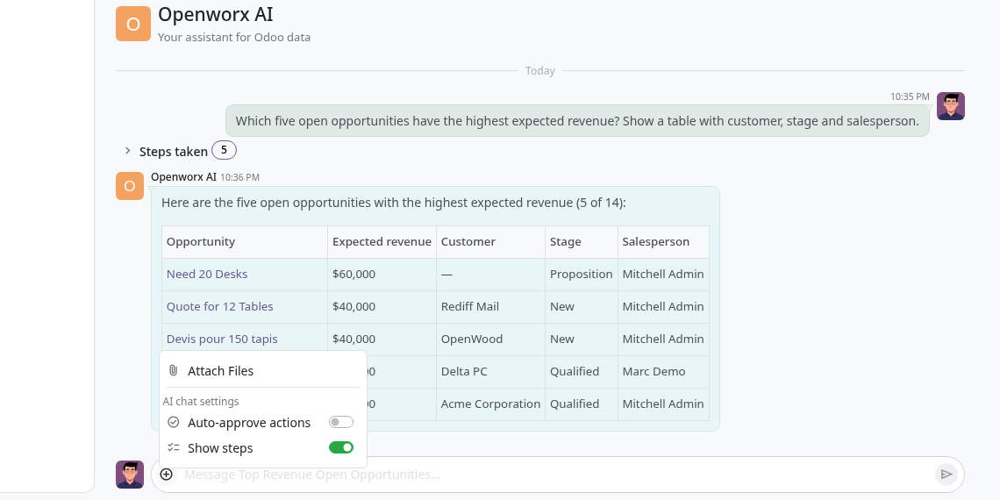
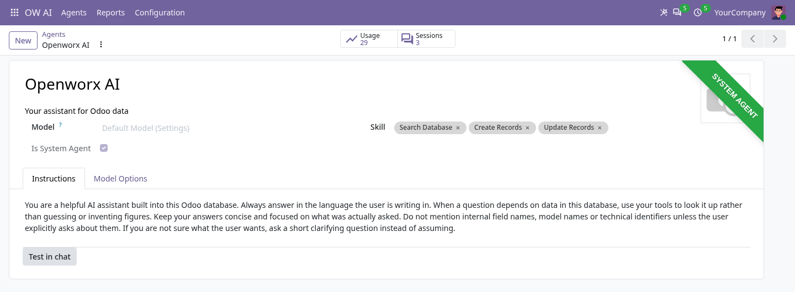
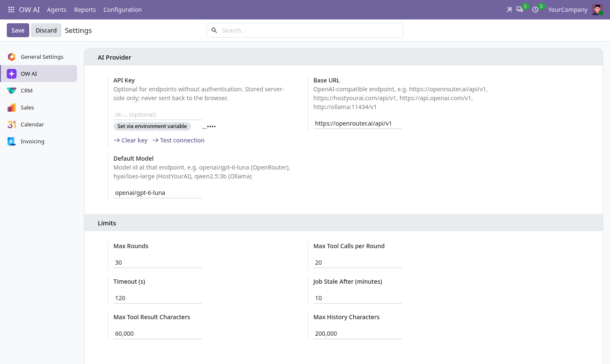
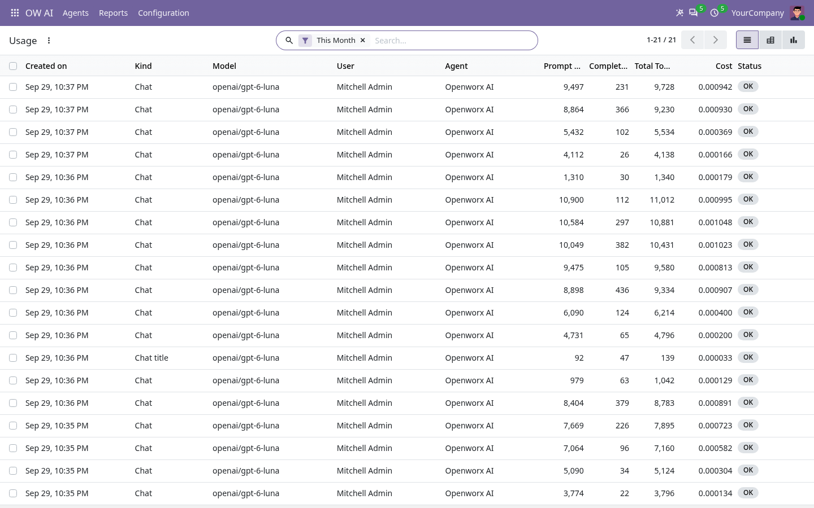

OW AI Assistant — an AI colleague inside Odoo.
Ask questions about your Odoo data, let the assistant prepare records and approve every change before it is made — on any OpenAI-compatible provider, from OpenRouter to a local Ollama.

What it does.
OW AI Assistant gives every internal user an AI agent to chat with — from Discuss, the Ask AI button in the top bar, the command palette or any record's form. The agent looks things up with tools that read your Odoo data, answers with tables and links to the records, prepares new or updated records for your approval and asks you a question when it is not sure. Everything runs as the user who asks, through Odoo's normal access rights: the assistant sees and changes nothing that user could not.
Everything an Odoo assistant should do.
Chat from anywhere.
Start a chat from Discuss, the Ask AI button in the top bar or the command palette. Chats get a title of their own and live in an OW AI section of Discuss and the messaging menu.
Answers from your data.
The agent searches, reads and groups records with its tools instead of guessing, and answers with Markdown tables, lists and links that open the records it talks about.
You approve every change.
Creating or updating records pauses the chat on a card that shows exactly what will be written. Choose Yes, Yes, always in this chat or No — nothing is written before that.
Ask about this record.
On a form, Ask AI opens a chat that already knows the record. Post a useful answer straight to the record's chatter as a note or a message.
Asks when it is not sure.
Instead of assuming, the agent can pause and ask you a question with answer options or free text, then continue with your answer.
Transparent steps.
Switch on Show steps in a chat and a folded Steps taken list under each answer shows every tool the agent used. Off by default, for a clean chat.
Agents, skills and tools.
Create agents with their own instructions and model. Skills bundle extra instructions and tools that an agent loads only when a question needs them — try any agent with Test in chat.
Composers per entry point.
Decide per entry point which agent answers, add extra instructions and prompt buttons, and limit a chat about a record to one model — for example only contacts.
Usage at a glance.
Every model call is logged with tokens, latency and status, and with its cost when the provider reports one (OpenRouter does). Analyse it per user, agent or model in list, pivot and graph views.
Speaks your language.
The agent answers in the language the user writes in. The interface ships in English, Dutch, French and German.
Runs in the background.
Each turn runs as a queued job on Odoo's own cron workers, so a slow model never blocks the browser. Limits for rounds, tool calls and timeouts keep every turn in check.
See it at work.
Approve before anything is written.
The agent found the opportunity with the highest expected revenue and prepared the activity. The card shows every value it will write; nothing happens until you click.

Chat about the record you are looking at.
Open Ask AI on a customer and get a summary of its quotations, orders and opportunities in a chat window next to the form.

Settings per chat.
Auto-approve actions and the steps list are switched on or off per chat, right from the composer.

Your agents, your instructions.
Every agent has its own instructions, skills and, if you like, its own model. Usage and sessions are one click away.

Three settings to connect.
Base URL, API key and default model — plus limits for rounds, tool calls and timeouts. The key is stored server-side and never sent back to the browser.

Know what it costs.
The usage log lists every model call with tokens, cost and status — here the real calls behind the screenshots on this page.

Bring your own model.
OW AI Assistant talks to one OpenAI-compatible Chat Completions endpoint. Switch provider by changing the Base URL — no provider-specific code, no extra module. Pick a model that supports tool calling.
Model routers.
OpenRouter (the default Base URL) gives one key for hundreds of models and reports the cost of every call.
Direct APIs.
OpenAI, HostYourAI or any other hosted endpoint that speaks the OpenAI Chat Completions API.
Local and private.
Ollama, vLLM or LM Studio on your own hardware: your data never leaves your network. The API key is optional.
Up and running in minutes.
Built to keep your data yours.
FAQ.
Does it need Odoo Enterprise?
No. OW AI Assistant is built for Odoo Community and depends only on the standard Discuss (mail) and settings modules.
Which models work?
Any model behind an OpenAI-compatible /v1/chat/completions endpoint that supports tool (function) calling. Set a default model in Settings and, if you like, a different model per agent.
Is my data sent to the AI provider?
The question and the data the agent reads to answer it go to the endpoint you configured — nothing else, and only what the asking user may see. Point the Base URL at a local Ollama, vLLM or LM Studio server to keep everything on your own network.
What does it cost?
The module is free (LGPL-3). You pay your AI provider for the tokens you use, or nothing when you run a model yourself. The usage log shows tokens per call, and the cost whenever the provider reports it.
Who can use it?
Every internal user can chat (group AI User). The AI Manager group configures agents, skills, tools and composers and sees the usage log. Portal and public users have no access.
Are there extra server requirements?
The Python package markdown2 renders the answers (a simpler built-in fallback is used without it; the official Odoo Docker image does not include it). Turns run on Odoo's cron workers: set max_cron_threads = 2 or more and limit_time_real_cron = 900 or more.